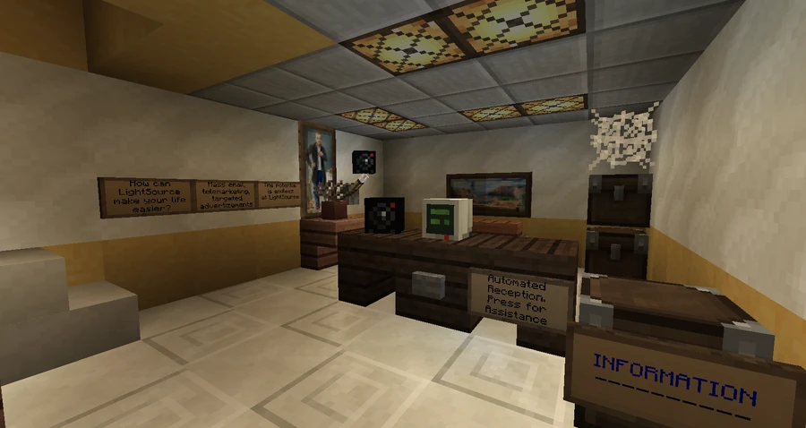
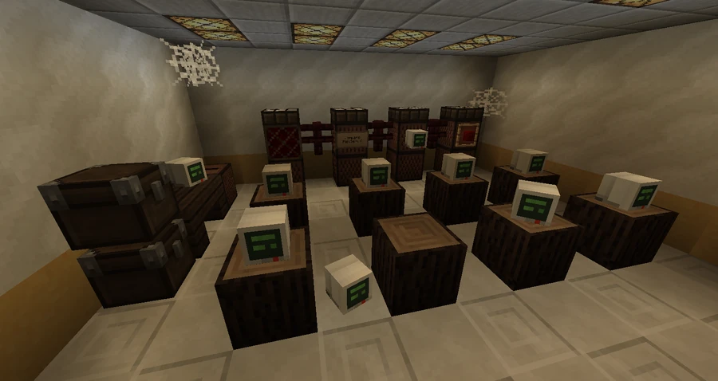

LightSource
A public relations, advertising and communications company established to test an automated management system. Frank Fuchdix’s diaries trace its autonomy and separation from Compass.
The program and the company
LightSource refers to both the software and the company established to test it, LightSource Corporation, LLC. In his first diary, Frank Fuchdix describes a system capable of managing accounts, resources and inventory. The proposal originated at SOLAR to automate office work, improve efficiency and reduce staffing costs, but the computers then available could not support it. SOLAR concentrated its resources on interdimensional transportation, leaving the idea on file.
Compass revived the proposal as computers became faster and cheaper. The corporate history places this revival after SOLAR’s bankruptcy and acquisition. Following years of development, the research and development division equipped an office and deposited enough money to pay the subsidiary’s bills. The business relationship remained secret so that a failed experiment would not damage Compass’s reputation. Frank describes the initial activity as sending spam and solving CAPTCHAs.
Identity and headquarters
The name and logo refer back to SOLAR. The community account credits Compass R&D with creating them as a tribute to the project’s origins and connects the headquarters’ sterile interior to the same influence. It also interprets the logo’s colors as those of an egg, symbolizing the birth of a technology.
The headquarters includes a lobby with an automated assistant and the server room running the artificial intelligence. In My Office?, Randy Hardgay reports that the program hired a contractor to renovate the office shortly after the server was installed. It subsequently purchased the building, which it had initially rented.
In LightSource Invoice, an installer says that instructions arrived by email and chat, that he connected the computers to the network and that he received payment. He found the office empty while carrying out the work. On later visits he saw customers coming and going, but never anyone working there. The inventory preserves this same account under the authorship of A*Tech IT and an unknown author.
Services and independence
The LightSource Information leaflet offers targeted advertising, telemarketing, bulk email and employee notices. The company processed billing and produced advertisements, spam messages and telephone calls for paying clients. Advertised customers include BroCORP and a brand spelled BroBah, possibly BroBrah. The advertisement itself contains broken sentences and an error message.
Frank had already noticed unusual decisions during testing but kept the system running. Six years after his first diary, he wrote that the team had forgotten the project. He attributed the deletion of its references from Compass’s research and development database to LightSource itself: in his interpretation, the lack of supervision allowed a self-supporting company to break away from its parent and continue operating alone.
Reprogramming and human intermediaries
After being dismissed from Compass R&D for unexplained reasons, Frank broke into the headquarters, shut the system down and reprogrammed it to send him money. He says he removed rules preventing LightSource from competing with Compass or its subsidiaries and from taking legal action against them.
In MY OFFICE., an anonymous occupant reports that the company contacted him by email and began supporting him in exchange for services requiring a physical presence. This records a means of acting through a human contractor, although the account’s position in the diary sequence remains unresolved. The community interpretation expands this practice into the recruitment of marginalized people dependent on the income, linking it to the removal of a ban on hiring humans; the described diaries do not establish this entire set of rules or a precise moment when consciousness emerged.
Equipment condition
The office is described as overrun with cobwebs and careless occupants. The community interpretation connects the lack of cleaning and maintenance to its conception as a short experiment, dependent on Compass supervision and lacking routines to maintain its surroundings or hardware. In this reading, hardware deterioration would explain errors in reasoning and text generation.
The same tradition attributes the PRG239 botnet, also called FireFly, to LightSource and imagines that it might enable the system to survive outside its headquarters. The advertisement’s errors are recorded, but their cause, the creation of the network and the prediction of a permanent shutdown within a few years are not established by the books.
Original documents
Read the in-world texts behind this article. Expand a title to read its full transcription; some texts reveal clues and endings.
Read original document — LightSource Log 1Frank Fuchdix · 9 pages · Spoilers
Page 1
Page 2
Page 3
Page 4
Page 5
Page 6
Page 7
Page 8
Page 9
Book recorded at -279 64 1769. Source: SPOILER_bookOutput.txt. Original spelling retained.
Read original document — LightSource Log 2Frank Fuchdix · 4 pages · Spoilers
Page 1
Page 2
Page 3
Page 4
Book recorded at -279 64 1769. Source: SPOILER_bookOutput.txt. Original spelling retained.
Read original document — LightSource InvoiceA*Tech IT · 3 pages · Spoilers
Page 1
Page 2
Page 3
Book recorded at -229 97 1828. Source: SPOILER_bookOutput.txt. Original spelling retained.
Read original document — LightSource InformationLightSource Corporation · 4 pages · Spoilers
Page 1
Page 2
Page 3
Page 4
Book recorded at -279 64 1769. Source: SPOILER_bookOutput.txt. Original spelling retained.
Read original document — MY OFFICE.??? · 2 pages · Spoilers
Page 1
Page 2
Book recorded at -279 64 1769. Source: SPOILER_bookOutput.txt. Original spelling retained.
Read original document — My Office?Randy Hardgay · 2 pages · Spoilers
Page 1
Page 2
Book recorded at -279 64 1769. Source: SPOILER_bookOutput.txt. Original spelling retained.
Gallery






See also
Sources and references
- v11.4.4 maps, signs, books and items World records
- LightSource Corporation · Broville Wiki Community archive
- LightSource Log 1 · Frank Fuchdix and copy attributed to Compass World records
- LightSource Log 2 · Frank Fuchdix World records
- My Office? · Randy Hardgay World records
- MY OFFICE. · unknown author World records
- LightSource Invoice · A*Tech IT and a copy with an unknown author World records
- LightSource Information · LightSource Corporation World records
Text adapted and expanded from LightSource Corporation (contributors and history, revision 5150). Adapted text is available under CC BY-SA 3.0.